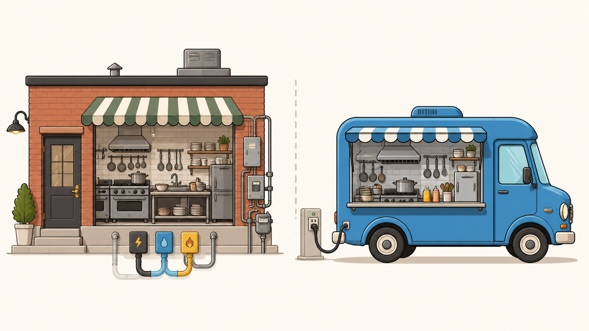

Day 1 of 2 — พื้นฐาน Docker & Docker Compose ที่เอาไปใช้กับเคสลูกค้าได้จริง
และทำไมระบบของเราถึงรันอยู่บนมัน
แพ็ก แอป + ไลบรารี + ค่า config ทั้งหมดไว้ในกล่องเดียว แล้วส่งกล่องนั้นไปรันที่ไหนก็ได้
เทคโนโลยีแยกแอปออกจากกันแบบนี้มีอยู่ใน Linux มานานแล้ว แต่ใช้ยากมาก · Docker เปิดตัวปี 2013 แล้วทำให้มันเหลือแค่คำสั่งไม่กี่คำ จนกลายเป็นมาตรฐานที่ทุกที่ใช้กันทุกวันนี้
docker ที่เราพิมพ์
สูตรอาหาร — บอกว่าจะประกอบ image ยังไง
อาหารแช่แข็ง — พร้อมใช้ แก้ไม่ได้ (read-only)
อาหารที่อุ่นแล้วบนจาน — คือ image ที่กำลังรันอยู่
| ศัพท์ | คืออะไร | เจอตอนไหน |
|---|---|---|
| Image | แพ็กเกจแอปที่พร้อมรัน | ตอน deploy / pull ไม่ผ่าน |
| Container | image ที่กำลังรันอยู่ | ตอนดูสถานะ/log |
| Volume | ที่เก็บข้อมูลถาวร นอก container | ตอนข้อมูลหายหลัง restart |
| Network | ช่องทางให้ container คุยกัน | ตอน service เชื่อมกันไม่ได้ |
| Registry | คลังเก็บ image (Docker Hub, Harbor, ECR) | ตอน ImagePull ไม่ผ่าน |
| Port mapping | เปิดประตูจากเครื่องแม่เข้า container | ตอนเข้าเว็บไม่ได้ |
Cannot connect to the Docker daemon5 คำสั่งนี้ครอบคลุมงานที่เราต้องใช้ 80%
| คำสั่ง | ใช้ตอน |
|---|---|
docker ps | ดูว่ามีอะไรรันอยู่บ้าง สถานะเป็นยังไง |
docker logs | ดู error ที่แอปพ่นออกมา — ใช้บ่อยที่สุด |
docker exec | เข้าไปข้างใน container เพื่อเช็คของ |
docker restart | ลองรีสตาร์ทดูก่อน |
docker inspect | ดู config, env, network, mount ของ container |
docker <คำกริยา> <ชื่อ container> — โครงสร้างเหมือนกันหมดdocker ps — ดูว่าอะไรรันอยู่# ดูเฉพาะที่กำลังรัน
docker ps
# ดูทั้งหมด รวมตัวที่ตายไปแล้ว ← สำคัญมากตอนไล่ปัญหา
docker ps -a
# ดูเฉพาะบางคอลัมน์ ให้อ่านง่าย
docker ps --format "table {{.Names}}\t{{.Status}}\t{{.Ports}}"docker ps ไม่เจอ → ต้องใช้ -a เสมอ เพราะ container ที่ตายแล้วจะไม่โผล่ในลิสต์ปกติ| STATUS | แปลว่า |
|---|---|
| Up 3 hours | ปกติ รันมา 3 ชั่วโมงแล้ว |
| Up 2 min (healthy) | ปกติ และผ่าน health check ด้วย |
| Exited (0) | จบการทำงานปกติ — มักเป็น job ที่รันเสร็จแล้ว |
| Exited (1) | แอปพังเอง → ไปดู docker logs ต่อ |
| Exited (137) | โดนฆ่าเพราะใช้ RAM เกิน (OOM) → เพิ่ม memory limit |
| Restarting (1) | ตายแล้วเกิดใหม่วนไปเรื่อยๆ → แอปพังตั้งแต่ตอนเริ่ม |
docker logs — คำสั่งที่จะใช้บ่อยที่สุด# ดู log ล่าสุด 100 บรรทัด พร้อมเวลา
docker logs --tail 100 -t my-app
# ตามดูแบบ real-time (Ctrl+C เพื่อออก)
docker logs -f my-app
# ดูเฉพาะ 30 นาทีล่าสุด
docker logs --since 30m my-app
# กรองเฉพาะบรรทัดที่มีคำว่า error
docker logs my-app 2>&1 | grep -i errordocker logs --tail 200 -t ไปด้วยเสมอ จะช่วยได้เยอะมากdocker exec — เข้าไปดูข้างใน# เข้า shell ข้างใน container
docker exec -it my-app sh # ลอง sh ก่อน (มีเกือบทุก image)
docker exec -it my-app bash # ถ้า image มี bash
# สั่งทีละคำสั่งโดยไม่ต้องเข้าไป
docker exec my-app env # ดู environment variables
docker exec my-app ls /app # ดูไฟล์ข้างใน
docker exec my-app cat /app/config.json-it = interactive + terminal ต้องใส่คู่กันเสมอเวลาเข้า shelldocker restart my-app # รีสตาร์ท — ทางแก้เบื้องต้นอันดับแรก
docker stop my-app # หยุดแบบสุภาพ (รอ 10 วิ)
docker start my-app # เปิดกลับ
docker kill my-app # ฆ่าทันที — ใช้เมื่อ stop ไม่ยอมหยุด
docker rm my-app # ลบ container (ต้อง stop ก่อน)docker stats & inspectdocker stats
docker stats my-app --no-streamใช้ตอนลูกค้าบอก "ระบบช้า" — ดูว่า CPU/MEM ตันหรือเปล่า
docker inspect my-app
docker inspect my-app | grep -A5 Env
docker port my-appใช้ตอนสงสัยว่า env / port / mount ตั้งค่ามาถูกหรือเปล่า
docker stats ถ้า MEM % แตะ 100% บ่อยๆ → เตรียมเจอ Exit 137 (OOM)docker ps -a
docker stats
docker inspect <name>
docker port <name>docker logs --tail 100 -t <name>
docker logs -f <name>
docker logs --since 30m <name>docker restart <name>
docker stop / start <name>
docker exec -it <name> shdocker system df
docker image ls
docker system prunedocker run -d --name web -p 8080:80 nginx แล้วเปิด localhost:8080docker ps — ลองอ่านคอลัมน์ STATUS และ PORTSdocker logs -f web ไว้ แล้วรีเฟรชหน้าเว็บ ดูว่า log ขึ้นอะไรdocker exec -it web sh แล้วลอง ls /usr/share/nginx/htmldocker stop web → docker ps (หายไป) → docker ps -a (ยังอยู่ สถานะ Exited)ps กับ ps -aเท่าที่ต้องรู้ ไม่ต้องเขียนเป็น
registry.company.com/team/my-app:1.4.2
└─── registry ───┘ └─ ชื่อ ─┘ └tag┘1.4.2, staging, latest:latest ให้อัตโนมัติlatest ไม่ได้แปลว่าใหม่ล่าสุดเสมอ — มันคือแค่ชื่อ tag หนึ่ง ใครจะตั้งก็ได้ เวลาถามลูกค้าให้ถาม tag ที่แน่ชัดdocker images # ดู image ที่มีในเครื่อง
docker pull nginx:1.25 # ดึง image จาก registry
docker rmi nginx:1.25 # ลบ image
# login เข้า private registry ของบริษัท
docker login registry.company.com
# ดูว่า image กินพื้นที่ไปเท่าไหร่
docker system dfpull access denied หรือ unauthorized → ส่วนใหญ่คือ ยังไม่ได้ login หรือ ชื่อ image/tag พิมพ์ผิดFROM node:20-alpine # ใช้ base image อะไร
WORKDIR /app # โฟลเดอร์ทำงานข้างใน
COPY package*.json ./ # ก๊อปไฟล์เข้า image
RUN npm install # สั่งรันตอน build
COPY . .
ENV NODE_ENV=production # ตั้งค่า env
EXPOSE 3000 # แอปฟังพอร์ตไหน
CMD ["node", "server.js"] # คำสั่งที่รันตอน start ← ดูบรรทัดนี้บ่อยFROM (base อะไร), EXPOSE (พอร์ตไหน), CMD (รันอะไร) ก็พอแล้วDocker Hub — nginx, redis, postgres ดึงได้เลย
Harbor / GitLab / ECR ของบริษัท — ต้อง login ก่อน
build เองในเครื่อง — ไม่มีใน registry
| Error ที่เจอ | สาเหตุที่พบบ่อย |
|---|---|
manifest unknown | tag ที่ระบุไม่มีอยู่จริง |
unauthorized | ยังไม่ได้ login / token หมดอายุ |
connection timeout | เน็ต/VPN/firewall เข้า registry ไม่ได้ |
ตัวที่ทีมเราใช้จริงในงานประจำวัน
docker-compose.yml| คำสั่งที่เห็น | แปลว่า |
|---|---|
docker compose (ไม่มีขีด) | รุ่นใหม่ (v2) ที่ใช้กันปัจจุบัน |
docker-compose (มีขีด) | รุ่นเก่า (v1) — ถ้าลูกค้าใช้คำสั่งนี้ แปลว่าเครื่องยังเป็นของเก่า |
docker run -d --name db \
-e POSTGRES_PASSWORD=... \
-v pgdata:/var/lib/... postgres
docker run -d --name api \
-p 3000:3000 --link db ...
docker run -d --name web ...ยาว จำไม่ได้ พิมพ์ผิดง่าย
docker compose up -dเขียนทุกอย่างไว้ในไฟล์ docker-compose.yml ครั้งเดียว แล้วสั่งทีเดียวจบ
services:
api:
image: registry.company.com/api:1.4.2
ports: ["8080:3000"] # เครื่องแม่ 8080 → ข้างใน 3000
environment:
DB_HOST: db # เรียก service อื่นด้วย "ชื่อ service"
depends_on: [db]
restart: unless-stopped
db:
image: postgres:15
volumes: ["pgdata:/var/lib/postgresql/data"] # เก็บข้อมูลถาวร
volumes:
pgdata:| คีย์ | อ่านว่ายังไง |
|---|---|
image | service นี้ใช้ image อะไร tag ไหน — ตรงกับที่ลูกค้าบอกหรือเปล่า |
ports | "ข้างนอก:ข้างใน" — เข้าเว็บไม่ได้ให้ดูตรงนี้ก่อน |
environment | ค่า config เช่น host ของ DB, API key — ผิดบ่อยที่สุด |
volumes | "ในเครื่อง:ใน container" — ข้อมูลหายหลัง restart ให้ดูตรงนี้ |
docker compose up -d # สร้างและรันทั้งหมด (เบื้องหลัง)
docker compose ps # ดูสถานะทุก service
docker compose logs -f api # ดู log เฉพาะ service ← ใช้บ่อยสุด
docker compose logs --tail 100 # ดู log ทุก service
docker compose restart api # รีสตาร์ทเฉพาะตัวเดียว
docker compose exec api sh # เข้าไปข้างใน
docker compose down # หยุดและลบทั้งหมด
docker compose pull && docker compose up -d # อัปเดตเป็น image ใหม่docker compose down -v จะลบ volume ทิ้งด้วย = ข้อมูลหายถาวร — อย่าใช้บนเครื่องลูกค้าเด็ดขาดใน compose ให้เรียกกันด้วย ชื่อ service (db) ไม่ใช่ localhost — เพราะแต่ละ container มี localhost ของตัวเอง
"8080:3000" เข้าเว็บที่ 8080 ไม่ใช่ 3000 · แก้ไฟล์แล้วต้อง up -d ใหม่ถึงจะมีผล
ทำให้ container ที่พังกลับมาเองเรื่อยๆ อาจเห็น "Up" ทั้งที่จริงมันวน restart อยู่ — ดู log ให้ชัวร์
แก้ yml เสร็จต้อง docker compose up -d ซ้ำ · restart เฉยๆ ไม่โหลด config ใหม่
lab/docker-compose.yml ที่แจกให้ อ่านว่ามี service อะไรบ้างdocker compose up -d แล้ว docker compose ps — ครบทุกตัวไหมDB_HOST ให้ผิด → up -d ใหม่ → ดู compose logs api ว่าฟ้องว่าอะไรอาการ → สาเหตุที่เป็นไปได้ → สิ่งที่ต้องเช็ค
docker compose ps — container ยังรันอยู่ไหม (Up หรือ Exited)docker compose logs --tail 100 <service> ดูว่าตายเพราะอะไรdocker port <name> ตรงกับที่ลูกค้าเข้าไหมcurl localhost:8080logs --since 30m ดู error ช่วงหลัง deploy| Exited (1) ทันที | config/env หาย |
| ImagePull error | tag ผิด/registry |
| Restarting วน | แอป crash ตอน start |
| Up แต่ 502 | แอปยังไม่พร้อม/พอร์ตผิด |
docker stats # CPU / MEM ตันหรือเปล่า
df -h # ดิสก์เต็มไหม ← สาเหตุที่ถูกมองข้ามบ่อย
docker system df # docker กินพื้นที่ไปเท่าไหร่
docker ps -a | grep -i restart # มีตัวไหน restart วนอยู่ไหมdocker system prune · ระวัง -a --volumes ลบ volume ด้วยdocker inspect <name> | grep -A10 Mountsvolumes: หรือเปล่าdocker compose down -v หรือ docker volume rm → ข้อมูลหายถาวร กู้ไม่ได้ ต้องไปดู backupdocker compose ps / docker ps -alogs --tail 200 -t อ่านจากบรรทัดล่างขึ้นบนexec <name> env / เทียบกับไฟล์ composedocker stats, df -hcurl localhost:<port> จากในเครื่องdocker ps -a (ผลลัพธ์)logs --tail 200 -tps -a · logs · exec · stats · inspect = ครอบคลุมงานที่ต้องใช้แทบทั้งหมดมีเคสจริงที่เคยเจอแล้วอยากถาม เอามาคุยกันได้เลย